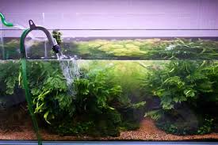

Maintaining your Betta's habitat involves regular, partial water changes (around 10-25%) every 1-2 weeks using a siphon or gravel vacuum to remove debris and waste. Make sure to dechlorinate tap water before adding it, match the water temperature to your tank, monitor parameters like pH and ammonia, observe your Betta for signs of stress during and after changes, and most importantly, stay consistent with your water change routine to maintain a healthy and stable environment.
